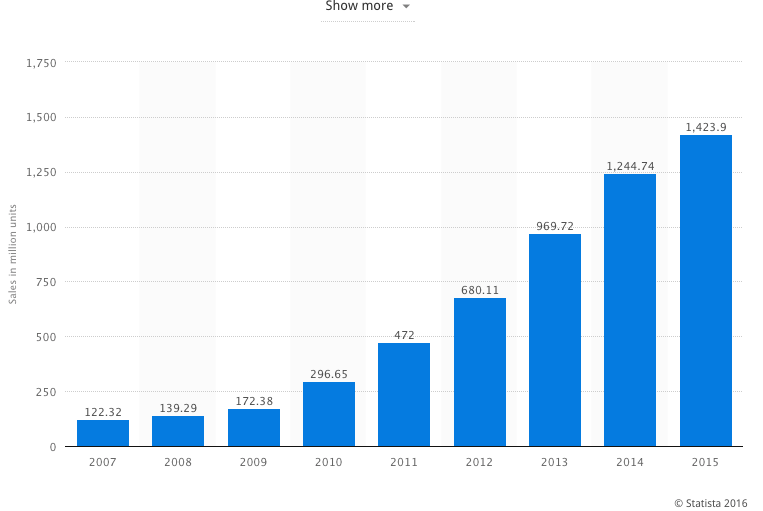

苹果、FBI以及你的全部生活
Contents
最近大家应该都知道了苹果公司和FBI在手机加密上的冲突。前几天苹果提交了一份长达65页的文档，是给法庭关于这个案子的答辩状，除了公司相关负责人的证词，里面还列举了相关的案例，苹果对于法律、案例以及技术的看法。非常精彩，信息相当全面。在讨论苹果和FBI以及法庭具体的冲突和观点之前，我觉得更值得讨论的问题是：“为什么人们需要加密”。对于大部分人，恐怕是认为加密是可有可无的，这种观点不仅在中国相当有市场，在美国竟然也有不少人支持。忙着竞选总统的希拉里也曾经说过，应该限制科技企业对于加密技术的使用，因为这会给警方工作带来困难。
而另外一方面，我们看到了强加密手段在各科技企业的产品中被使用的越来越普及，iPhone上全盘加密早就是默认选项，Android在6.0也开始强制全盘加密。中国这边，越来越多的互联网公司已经默认把链接变成了https，比如前一段淘宝已经全站默认https了。这是为什么呢？在恐怖主义越来越猖狂的今天，这些科技企业这么做总不会是为了给政府部门找麻烦吧？
实际上，难以被破解的强加密早就成了我们生活中的必选项。iPhone在3GS中就有了硬件加密芯片，到iOS 4的时代变成了默认开启加密（2010年），当然，那个时代的加密手段还比较脆弱，加密、系统和硬件在配合上仍然有一些漏洞，仍然是可以被破解的。到iOS8（2014年）的时候，iPhone的默认全盘加密已经几乎无法破解了，在这个版本里，苹果还升级了Passcode的密码强度，可以使用自定义长度的密码，不再是简单的4位数字。再加上输错10次密码自毁功能，以及连续数错密码的时间延迟，可以说用户的资料已经非常安全了。
苹果从开始使用加密，到完善加密的 2010 和 2014 年这两个时间点非常有意思，如果对照一下这些年全球智能手机销量趋势图，很容易就可以看出来，2010是智能手机真正爆发的年份，而2014年智能手机增长率几乎到达了顶峰。（见下图）

数据和图标来自 Statista
仅看中国也不难得到这个结论，最风光的智能手机厂商小米，成立于2010年，到2014年达到了神话一般的业绩，之后开始被媒体质疑增速下降（这个质疑对不对咱们不讨论，但质疑增速本身代表了市场环境变化）。再看软件方面，微信2010年启动，2014年已经达到了毫无争议的垄断地位。
这说明了一个简单的问题，2010年开始，智能手机大规模的进入，或者叫做入侵了我们的现实生活，到2014年可以被认为普及已经完成。对于这个事实，我一直用一个更形象的比喻来说明。你可以想象人有两种生活，一种是在物理世界的生活，一种是在数字虚拟世界的生活。前者就是你的吃喝出行之类现实生活，而后者是你发邮件用微信刷朋友圈看微博之类行为的总和。2010年，虚拟世界的生活正式打开了入口，大多数人在此之前使用计算机只是工作需要，在移动互联网浪潮开始之后，才真正把自己生活放入虚拟世界。这样的趋势之后几年迅猛发展，到2014年，对于不是特别贫困地区的人们来说，数字虚拟世界的生活时长已经接近，甚至超过了现实世界。智能手机使用量是有网络效应的，用的人越多，用的人也就越多，时间也就越长。比如，你早就用了智能手机，但你最好的朋友始终不用，你就还得打电话找他，直到有一天他也开始用智能手机了，你们就开始用微信聊天，不再打电话了。这个效应放大到全世界，结果就是越来越多的人进入这个数字化世界，把越来越多的生活放在了这里。
到今天，智能手机虽然还叫做手机，但其实它是一台移动的计算机（苹果在答辩状里面也特别提出了这一点，这个看法是美国最高法院认可的，来自 Riley v. California 案 ）。在10年之前，我们也使用计算机，但整个世界的数字化水平比今天差的太远，所以我们的信息并没有像今天这样集中在一个设备上。10年前，我们在公司上班用公司的办公电脑，回家可能会有一台自己的电脑上个网玩玩游戏，那时候还有太多的文档是纸的，你会收到纸质的信用卡账单，会打电话和朋友讨论事情…手机当然也用，但上面无非就是一些通讯录和短信。现在完全不一样了，你可以整理现实生活相关的一切东西，我相信已经极少能找到和你手里这台手机不相关的东西了。就算是看起来毫无关联的体育和运动，往往也会有个app帮你记录、规划，以及交友。工作和日常也被链接到了一起，除了一些特别严谨的公司，很少有企业会要求把工作用手机和自用手机分开成两步，所以你也会在自己的手机上处理工作，收公司邮件，安排工作（包括其他同事）的日程，在微信上和客户讨论问题…
历史上从来没发生过这样的事情，拿走你的手机，得到里面的数据，就彻底掌握了你的生活。10年前要做到这一切，需要撬开你家门锁，把你家里彻底翻一遍，拿走你所有的纸质文档，再去你公司偷走你计算机的硬盘，甚至还要跟踪的日常路线兴趣爱好，窃听你的电话…难度太大了。10年前一个商业间谍要想办法物理的进入一家公司，还要长时间的潜伏，才能把商业机密弄走。而今天，只需要找到一个权限合适的员工，雇一个普通的小偷，从他身上偷走手机，如果这手机没有加密，一切问题就解决了，所有秘密都到手了。手机的移动性造成了这种盗窃更加容易，珍贵的数据们像长了腿一样，天天满大街乱走。再说很多时候甚至不用偷，人本来就会莫名其妙丢手机的。
就算我们不提商业机密的问题，只说最简单的诈骗，毕竟世界上大部分犯罪最终的目的都是钱。电话诈骗大家已经不陌生了，骗子们仅仅靠一个手机号码和机主的名字（甚至只有一个姓）就可以玩出百般花样骗钱。假装孩子进了手术室、假装房东、假装领导、冒充警察和法院…那么如果骗子拿到了你的手机，看完了你的邮件和微信，你猜他们能玩出来什么花样？那时候恐怕你朋友中最警惕、安全意识最好的那个人，也未必能不上当。以今天一部智能手机存有的个人相关信息数量，我甚至觉得偷走一部不加密的手机，拿到其中全部信息，已经可以用程序在虚拟空间重造这个虚拟的人。也就是说，拿到手机内的数据，把这个人绑架起来，学习他的数据特征，接管他所有的互联网服务帐号，替他在这些服务上继续保持活动，很可能长达数年他的家人都好友都揭穿不了。
这可不是危言耸听，它很好验证。愿意做实验的可以试试看，拿起来你的手机，假装这是别人的，带着你的好奇心，把所有能打开的邮件、微信、日程、备忘录以及其他app全看一遍，并把看的时候发现的有价值信息记在一张纸上。这个工作可能得花上你一个周末，完成之后保证吓你一跳。人们在一部小小的手机上存储的信息，已经远远超过了物理世界任何一个单一场所存储的信息量，这一部小小的手机，几乎存储了一个人的全部世界。
为什么从2010年开始，人们有了对智能手机上加密的需求，这就是原因。到了2014年，不可破解的加密必须成为手机的默认功能，一部不加密的手机就是你生活中最大的漏洞。我知道很多人认为“我并不是什么大人物，我也没有什么有价值的信息”，这种看法是不对的，因为使用你泄漏的资料，骗子可以用来骗你供职的企业或者朋友，以及安全知识更薄弱的长辈。所有人的信息都是有很高价值的，只是看如何使用它。手机上不可破解（至少是不可短时间内破解）的需求随着使用的增长而上升，到今天已经成为了必备功能。 回头看这五年的变化，苹果不愧是拉开了智能手机这次革命的公司，他们对于什么时候要提供加密功能，什么时候必须强制加密有清醒的认识。
说完iPhone，再看Android。因为种种原因，Android在这方面动作慢的多，Android 4.4才开始提供全盘加密功能（非默认），那已经是2013年了，但加密性能仍然很低，因为没硬件支持，软件上优化也不够，用起来严重影响手机性能，所以在Android 4.4上也没多少人真正用它的加密。到Android 5.0的时候，全盘加密效率高了很多，算是一个可用的功能了，但已经是2014年了。Google曾经试图在Android 5.0上默认开启加密，但因为厂商的反对最终放弃，默认开启加密的行为从Android 6.0才真正开始，当然仍然是由软件实现，所以手机性能多少还会受到影响。考虑到这一点，谁说Android手机跑分没用来着？跑分低的手机根本不具备启用加密的条件。当然，高通也出了支持加密的芯片，只是不是所有的Rom和手机都对此优化而已。
今年已经是2016年，每个人每天花了多长时间在手机上，总共放了多少重要信息在手机上，我相信大家自己都会有直观的感受。在这个时代，继续使用Android 4.4系统的手机是不可接受的行为，至少也需要一部性能非常好的Android 5.0手机。以我个人标准来看，到Android 6.0才算真正可用的版本，我也是从升级到了6.0之后才比较多的使用Android手机的。非常遗憾的是，相当多的国产手机在这方面相当不重视，往往发布会宣传了数百个功能，对加密则完全不提。这是把自己用户置于高危环境，很不负责任。我知道不少严谨的企业会禁止员工使用非全盘加密的手机收取公司邮件，这是非常正确的，只是这么做的企业太少了。很尴尬的事实是，哪怕是买落后三代的iPhone 5，也比买某些Android品牌手机刚刚发布的旗舰更安全。同时我也很惊讶，中国还有那么多相当大规模的企业允许不加密的Android手机收取公司邮件和访问内部系统，但同时又实施各种看起来极其严格的保密条款和公司出入管理。
到了现在这个年份，使用强加密手机并不是为了防政府和警方查看，而是为了自己以及和自己相关的所有人的安全。这跟家里的门上需要上锁是一样的道理，考虑到前面说的，人们在手机上储存的信息已经超过物理世界里面任何一个单独的场所的信息，手机加密可比家里门上加锁重要多了。 当我们明白了在手机上使用强加密手段的重要性之后，再回来看苹果和FBI的冲突就会变得清晰很多。
我们来看看FBI通过法庭要求苹果提供什么协助：
关闭iPhone的输错10次密码自动销毁数据功能 允许FBI使用电子设备提交密码进行尝试，而不是人工输入数据 关闭输错密码的时间延迟，以加快尝试速度
这三个要求可以用一句话概括，就是协助FBI可以通过无限次快速尝试密码来解密手机。苹果的拒绝原因在答辩状里面解释的很清楚：iPhone使用了端对端的全机加密，密钥是在iPhone上单独生成的，苹果没办法知道它。以上的这些要求，现在的iOS操作系统是做不到的，它根本不存在这个功能，这并不是如FBI所认为的“仅此一次“的合作调查。而如果苹果可以完成FBI的要求，那么就意味着iOS系统里面存在了后门，那么这个系统也就不安全了。因为一旦存在了后门，那么就无法控制谁使用它。苹果在答辩状里面提了另外一个问题：“如果有法庭许可，警方是否可以命令一家软件公司，通过在线升级系统，把一个特定目标使用的软件换成带有木马的版本？” 一旦这样的先例打开，后面几乎是无穷无尽的麻烦，不仅会损失苹果的利益，最终也会让全体公民都受到伤害。
虽然目前看起来FBI在要求一个“经法庭允许之后，才能被使用的解密后门”，但一旦存在这个后门，它的实际使用范围就不可能被控制住了，除了在各种案例中，各级部门会用尽办法从法庭手里弄到这份许可而使用它，还有无数黑客和真正的犯罪分子也会盯上这些后门。可能有人觉得，难道美国政府没有能力确保这个后门不被别人使用吗？FBI没能力保密信息吗？很遗憾，这样的保密要求是谁也做不到的。前面几年里面，被新闻报道的美国联邦政府泄密案件就已经有很多次了，2015年，美国联邦政府丢失了至少400万名雇员的个人信息。美国最有权势的，连黑帮都怕的部门是国税局（IRS），他们丢数据丢的更凶猛，2015年5月美国国税局宣布丢了10多万用户数据，包括了全部个人信息，社保号以及报税信息，到2015年8月，这个数字被修正为33万，几乎翻倍。而前几天（2016年2月26日）我看到的新闻说IRS又修正了这个数字，受害者又翻了一倍，现在大约是72万人信息被盗。这样的新闻实在是太多了，在这个时代，只要数据存在，它就几乎没有可能被保密，无论是联邦政府还是国税局甚至FBI。想让苹果在已经完成的强加密系统上，制造出一个专供FBI和法院使用的后门，又不被别人利用，这是不可能的。唯一的办法，就是使用尽量强的加密系统，并且让加密系统完美无缺，尽量没有bug。就算如此，要保证信息绝无泄漏，仍然是不可能的。这也顶多能做到“让信息泄漏变的困难许多”而已，更别说要在上面开个后门了。在如今的世界，根本不要去试图获取那些非必须的信息，因为一旦拿到手里，就谁也没法保证它们的安全。安全的信息是不存在的信息，安全的系统必须是除了当事人谁也没办法解密的系统。
在不了解前因后果的情况下，我相信有很多人会支持FBI的要求，毕竟这牵扯到一起恐怖袭击。Bill Gates在苹果发公开信之后评论说”苹果应该配合FBI“，大概他很难理解，为什么这不是一个”一次性的配合“。如果他始终用着Windows Phone的话，他确实也很难理解为什么手机早已成为人们生活的中心，必须进行加密。当然，Bill Gates在几天后改口，说对那份报道非常失望，认为是记者给他划分了阵营。但他在这次解释里面立场仍然非常模糊，只是说“我不是那个意思，他们误会了我的意思…” 但到底支持不支持苹果在iOS上开后门这个本质问题，他仍然没说清楚。这并不是微软更加擅长在商言商，而是他们（如果Bill Gates做为创始人和公司董事可以一定程度代表微软的思路的话）没理解智能手机在生活中地位的变化以及今天世界数字化的程度。
至于个人的态度，就算是那些苹果可以配合一下FBI的人，恐怕也并不愿意自己的隐私很容易泄漏。前几天有人写了个笑话，很好的概括了这个事件，我把它翻译在这里：
A: “苹果真糟糕，为什么不配合FBI的要求，这毕竟是反恐啊。“ B: “是啊，所以你下一个手机不会买iPhone了？” A: “开什么玩笑，我才不会用一个随便就被解密的手机呢！”
恐怖主义和个人隐私的冲突，这并不是第一次，之前Telegram的加密模式也引发过争议。去年，TechCrunch记者Mike Butcher对Telegram创始人Pavel Durov的一次采访。那时候媒体们刚刚发现，伊斯兰国的恐怖分子一直推荐使用Telegram做为通讯工具，因为Telegram提供了比较可靠的端对端加密聊天模式。Butcher针对这件事问Durov说：“当你知道恐怖分子们正在使用你的平台作恶，这是否会让你夜里睡不着觉？” Durov回答说：“我认为，人们的隐私以及拥有隐私的权利，比我们担心发生像恐怖袭击这样糟糕事情的恐惧更重要。”
关于Telegram提供的端对端加密的争议和苹果对于手机的加密一样，这些加密手段说到底还是帮助普通人更好的生活。这样的问题可以问很多，计算机是生活必需品还是犯罪工具？手机是生活必需品还是犯罪工具？电是生活必需品还是犯罪工具？汽油是生活必需品还是犯罪工具？菜刀是生活必需品还是犯罪工具？隐私以及隐私权和财产权一样，是人类文明所必须的，也是人类社会存在的标志，放弃这些，恐怖袭击是否还存在不确定，但可以确定的是人类的社会本身已经不存在了。
什么样的社会没有犯罪也没有恐怖分子？很简单，把这个世界每一个人都控制起来就可以了，如果能成功的把全世界的人都关进集中营看管起来，那可能确实没有犯罪也没有恐怖袭击了。但这样的结果，是我们想要的吗？恐怕把世界变成这样恰恰是恐怖主义希望达到的目标吧。
也许有一天真的会有更科技的办法来监控所有人，比如人一出生就先在大脑里面种植一个芯片之类的。但是那一天到来的时候，人类这个种族也就算是灭亡了，希望那一天永远不要到来，也希望现在的人类文明、法律以及社会制度，我们对于隐私和财产权利的重视，在未来的某一天可以阻止这种疯狂的想法。而从今天开始，我们就应该前所未有的重视个人隐私权，这事关人类的文明和 未来。
其实，从另外一个角度看，大多数人的秘密也不可能瞒不住政府，无论是中国还是美国。我一直开玩笑说，如果你的密码忘了，没关系，总有一天你会从NSA（美国国家安全局）的泄密文件里面找到它的。 FBI遇到的这个问题，真的就是一个特例而已。但就算如此，足够好的加密系统仍然可以在诸多日常生活中常见诈骗行为以及商业活动中保护你的利益。
Author Huo Ju
LastMod 2016-02-27